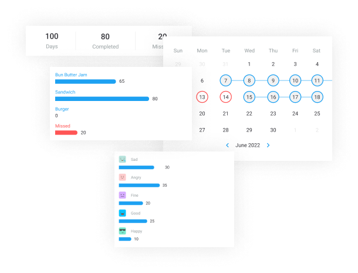

<!-- <p>customize-five works!</p> -->
<section class="customize-section flex items-center justify-center p-8">
    <div class="flex items-center justify-center xl:gap-24 lg:gap-24">
      <div class="flex flex-col">
        <div class="sm:text-lg md:text-2xl lg:text-4xl font-semibold text-start">
          Customize the way you like
        </div>
  
        <div>
          <ul class="mx-4 mt-4 group-list">
            <li>Turn Off-On the features that you want to use</li>
            <li>Light and Datk theme</li>
            <li>Multi-theme colors</li>
          </ul>
        </div>
      </div>
      <div class="hidden lg:block md:block group-img">
        
      </div>
    </div>
  </section>
  
